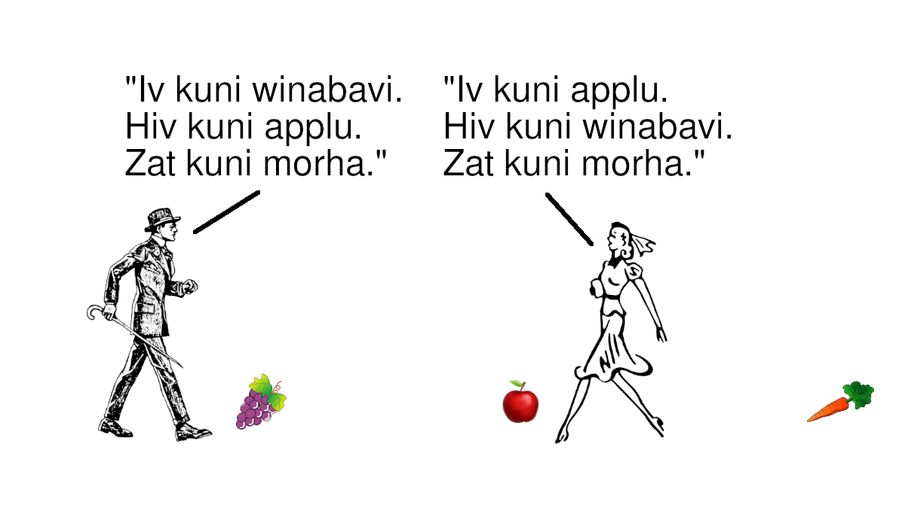
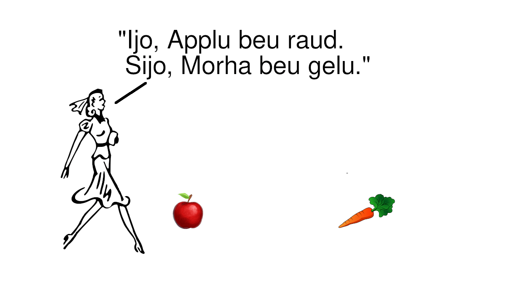
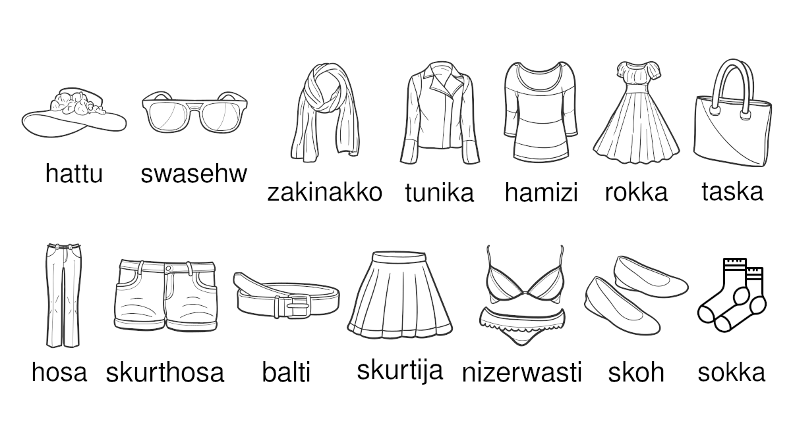

Skauwa

rim

grauti

winestra Haso mikil obar Kistu.
tehswo Haso smal obar Kistu.

faru

% isti %.
% ne isti #.
# ne isti %.
# isti #.
"%" isti %.
% isti "%."
""%" isti %" isti "% isti "%.""
"% isti "%"" isti ""%" isti %."
faru winabavi isti blau.
faru olibavi isti groni.
faru erzubavi isti raud.
winabavi beu blau.
olibavi beu groni.
erzubavi beu raud.
winabavi kuni bavi.
olibavi kuni bavi.
raud ne kuni bavi.
groni ne kuni bavi.
raud kuni faru.
groni kuni faru.
winabavi ne kuni faru.
olibavi ne kuni faru.
"erzubavi beu raud" kuni reht.
"winabavi ne kuni faru" kuni reht.
"oli ne beu gelu" kuni skuldi.
"groni kuni bavi" kuni skuldi.
win andi winabavi beu raud.
hwit andi blak ne kuni bavi.
erzubavi ne andi olibavi beu groni.
winabavi ne andi blau kuni faru.
winabavi efza erzubavi kuni bavi.
erzu efza olibavi beu groni.
hwit ne efza blak kuni bavi.
"win andi oli andi erzubavi" isti "win andi oli; erzubavi."
"% @ # @ $" isti "% @ #; $."
"% @ # @ $ @ &" isti "% @ #; $; &."
% andi # isti # andi %.
% efza # isti # efza %.
"% ne efza # @" isti "% efza # ne @."
"% @ # andi # @ %" isti "% andi # @ sa."
"% @ %" isti "% @ ga."
winabavi beu blau.
win beu galik faru.
olibavi beu anzar faru.
winabavi andi win beu galik faru.
olibavi andi win beu anzar faru.
winestra Winabavi beu gelu.
blau Winabavi tehswo gelu Winabavi.

daili haubid

Siun hald Applu.
Treu habe Applu.
Siun habe Har.

% hwat # hald isti #-as %.
% hwat # habe isti #-is %.
Siun hald Winabavi.
Siun-as Winabavi beu groni.
Siun habe Har.
Siun-is Har beu blak.

haso et morha.
Haso ne et Morha.
Haso et Winabavi.

winestra Kalik beu full.
tehswo Kalik beu lavi.

walk Siun to Treu.

walk Siun ab Hus.

walk Siun bi Adra.

walk Siun to Treu ab Hus bi Adra.

walk winestra Siun midi anzer siun.
walk tehswo Siun ne midi anzer siun.

Magaz hald gelu Bok.
Bok hwat Magaz hald beu gelu.
Siun hwat hald gelu Bok kuni magaz.
Siun hwat-as Bok beu gelu kuni magaz.

Brudi andi Gumo lubo andi habe sa.
wer hwat wib lubo isti wib-is gumo.
wib hwat wer lubo isti wer-is brudi.

wib andi wer kuni mann.
brudi andi gumo kuni makkjo.
magaz andi knabo kuni kind.
mann andi kind kuni siun.
Wib gaber kind midi Wer.
kind hwat wib gaber isti wib-is kind.
kind hwat wer-is brudi gaber isti wer-is kind.

Moder andi Dohter habe sa.
magaz hwat wib gaber isti wib-is dohter.
wib hwat gaber kind isti kind-is moder.

Fader andi Sunu habe sa.
knabo hwat wer-is brudi gaber isti wer-is sunu.
wer hwat-is brudi gaber kind isti kind-is fader.

"siun-is moder" andi "siun-is fader" kuni "siun-is mann."
"siun-is dohter" andi "siun-is sunu" kuni "siun-is kind."
siun-is kind-is mann isti siun-is makkjo.
siun-is mann-is kind isti siun-is sibbju.
siun-is auhaim-is kind isti siun-is modrija.
siun-is kind-is kind isti siun-is nefo.
siun-is sibbju-is kind isti siun-is nefo.
siun-is mann-is sibbju isti siun-is auhaim.
siun-is mann-is mann isti siun-is atto.
siun-is modrija-is modrija isti siun-is modrija.
siun-is modrija-is kind isti siun-is nefo.
siun-is nefo-is kind isti siun-is nefo.
siun-is auhaim-is modrija isti siun-is auhaim.
siun-is atto-is mann isti siun-is atto.
moder andi fader; makkjo; dohter; sunu; sibbju; modrija; nefo;
auhaim; atto kuni kundi.
ute daili lika

inne daili lika

siun hwat habe bain kunne walk.
siun hwat ne habe bain ne kunne walk.
siun hwat hald winabavi kunne et winabavi.
siun hwat ne hald winabavi ne kunne et winabavi.
siun hwat sage gaber word nuto munz.
siun kunne hauvi word nuto auva.
siun kunne sehw nuto auga.
Wib sage "Haso furi Kistu."

Wib sage "Ik hald Applu. Ik-as Applu beu raud."

Wib sage to Knabo "Zu hald Bok. Zu-as Bok beu groni."

Wer andi Wib sage to sa.


ijo andi "ain efza fau" ijo kuni it.
ijo andi manag ijo kuni iv.
hijo andi "ain efza fau" hijo kuni hit.
hijo andi manag hijo kuni hiv.
sijo andi "ain efza fau" "sijo efza ijo efza hijo" kuni sit.
sit andi manag "sijo efza ijo efza hijo" kuni siv.
% kunne sage to # "ik isti %.
zu isti #."
ik andi "ain efza fau" "zu efza ijo efza hijo efza sijo" kuni wit.
ik andi manag "zu efza ijo efza hijo efza sijo" kuni wiv.
zu andi "ain efza fau" "zu efza ijo efza hijo efza sijo" kuni jit.
zu andi manag "zu efza ijo efza hijo efza sijo" kuni jiv.
Wer kunne sehw Haso.
Wer kna hwat Haso hald Winabavi.
Wib ne kunne sehw Haso.
Wib ne kna Sijo hwat Haso hald.

Wib andi Wer kunne hauvi sa.

Siun kuni wib jabu Siun kuni brudi.
Bavi ne kuni erzubavi jabu Bavi beu blau.
all brudi kuni wib.
ne all wib kuni brudi.
ne wib kuni gumo.
all moder habe kind.
ne all wib habe kind.
ne magaz habe kind.
hwit Haso aiw beu hwit.
Haso naiw et nuto furko.
Haso ne aiw nehw siun.
Knabo aiw habe ribi.
Knabo naiw kuni haso.
Knabo ne aiw et fodo.
all sako hwat kunne walk habe bain.
ne all sako hwat siun kunne drink kuni win.
siun andi rait andi kistu andi % kuni sako.
all sako hwat siun et kuni fodo.
skin

Wib beu agiso.
Wer beu wraiz.

sorgu siun wille beu fraw.
siun hwat no hald fodo wille et.
siun naiw wille et erzu.
siun wille bain swa walk andi munz swa et; auva swa hauvi; auga swa sehw.
siun hwat wille et beu et-wil. et-wil Siun wille et.
siun hwat wille drink beu drink-wil. drink-wil Siun wille drink.
siun hwat wille % beu %-wil. %-wil Siun wille %.
wib wille beu swangar swa gaber kind.

moder dade gaber kind.
wib hwat ne kuni moder ne dade gaber kind.
swangar wib werz gaber kind.
siun hwat ne kunne beu swangar ne werz gaber kind.
wib hwat dade andi werz gaber kind beu gaber kind.
siun hwat beu % dade andi werz %.
lib Fisk obar daud Fisk.
lib Fisk werz daud jabu siun daud-i Fisk.

Wer daud-i Wib nuto Sahs.
%-i # isti mako hwat # werz %.

fuir beu hait. is beu kald.

wasti

1 % isti %.
2 % isti %%.
2 # isti ##.
3 % isti %%%.
1 andi 1 isti 2.
1 andi 2 isti 3.
2 andi 1 isti 3.
1 andi 1 andi 1 isti 3.
0 andi 1 isti 1.
3 andi 1 isti 4.
4 andi 1 isti 5.
5 andi 1 isti 6.
6 andi 1 isti 7.
7 andi 1 isti 8.
8 andi 1 isti 9.
9 andi 1 isti X.
X andi 1 isti Y.
Y andi 1 isti 10.
1 mal 3 isti 3.
2 mal 3 isti 3 andi 3.
3 mal 3 isti 3 andi 3 andi 3.
3 mal 2 isti 2 andi 2 andi 2.
10 andi 2 isti 12.
10 andi 3 isti 13.
10 andi 10 isti 20.
10 mal 2 isti 20.
10 mal 3 isti 30.
10 mal 10 isti 100.
"1 helke 2" mal 2 isti 1.
"3 helke 2" mal "5 helke 4" isti "15 helke 8."
"% helke #" mal # isti %.
"% helke 1" isti 1.
1 mikil 0.
1 mikil 1 helke 2.
1 isti 1.
1 smal 3 helke 2.
1 smal 2.
% mikil # jabu # smal %.
1 miliju isti 1000 stapi.